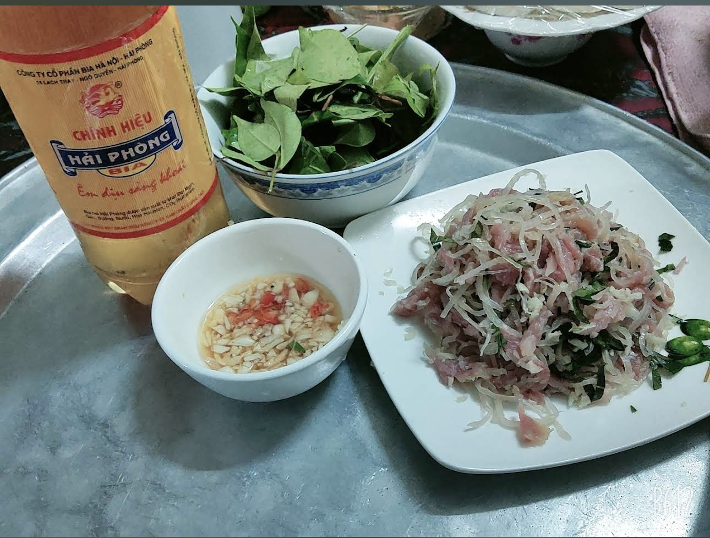
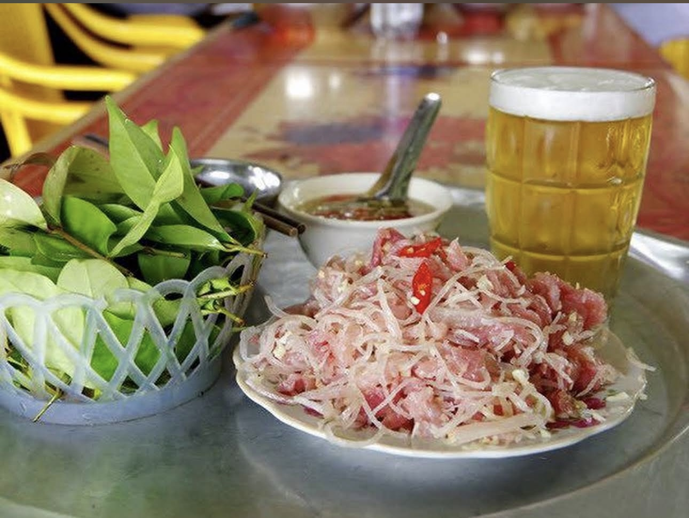

<!DOCTYPE html><html><head><title>Trang mới</title></head><body></body></html>
<!DOCTYPE html>
<html lang="vi">
<head>
  <meta charset="UTF-8" />
  <meta name="viewport" content="width=device-width, initial-scale=1" />
  <title>Chè Ông Lạc — Huế</title>

  <link href="https://fonts.googleapis.com/css2?family=Inter:wght@400;600;700&family=Lora:wght@400;500&family=Noto+Serif+Display:wght@700;800&display=swap" rel="stylesheet">

  <style>
    :root{--bg:#faf9f7;--text:#141518;--muted:#6e7380;--surface:#fff;--surface-2:#f6f6f7;--border:#e6e6e8;--radius:16px;--shadow:0 12px 28px rgba(0,0,0,.08);--container:min(1200px,92vw)}
    *{box-sizing:border-box} html,body{height:100%}
    body{margin:0;background:var(--bg);color:var(--text);font:500 clamp(1.06rem,.96rem + .6vw,1.22rem)/1.8 "Lora",ui-serif,Georgia,serif;-webkit-font-smoothing:antialiased;-moz-osx-font-smoothing:grayscale}
    a{color:inherit;text-decoration:none}
    .container{width:var(--container);margin-inline:auto}
    .visually-hidden{position:absolute!important;width:1px;height:1px;overflow:hidden;clip:rect(0 0 0 0);white-space:nowrap;clip-path:inset(50%)}

    .site-header{position:sticky;top:0;z-index:50;border-bottom:1px solid var(--border);backdrop-filter:saturate(180%) blur(10px);background:rgba(255,255,255,.86)}
    .header-inner{padding:12px 0 6px}
    .site-title{text-align:center;margin:6px 0 8px;font-family:"Noto Serif Display",serif;font-weight:800;font-size:clamp(2.2rem,1.6rem + 3vw,3.2rem);background:linear-gradient(90deg,#c8a96a,#d6b375,#c8a96a);-webkit-background-clip:text;background-clip:text;color:transparent}
    nav.primary{display:flex;justify-content:center;gap:28px;flex-wrap:wrap;padding-bottom:10px}
    .nav-link{padding:8px 12px;border-radius:10px;color:#6e7380;font:600 1rem/1 "Inter"} .nav-link:hover{background:#f6f6f7;color:#141518}

    .hero-bleed{position:relative;left:50%;margin-left:-50vw;width:100vw;overflow:hidden;border-radius:0 0 var(--radius) var(--radius);box-shadow:var(--shadow)}
    .hero-bleed img{display:block;width:100%;height:auto;object-fit:cover}

    .wrap{width:var(--container);margin:0 auto;padding:28px 16px}
    .row{display:grid;grid-template-columns:minmax(480px,70%) minmax(280px,30%);gap:24px;align-items:start;margin:24px 0}
    @media (max-width:980px){.row{grid-template-columns:1fr}}
    .card{background:#fff;border:1px solid var(--border);border-radius:14px;box-shadow:0 8px 18px rgba(0,0,0,.06)}
    .pad{padding:18px}

    .eyebrow{font:700 1rem/1 "Inter";color:#1a5cff;letter-spacing:.2px;margin:0 0 6px}
    .place-title{font-family:"Noto Serif Display",serif;font-weight:800;margin:0 0 8px;color:#b04a2f;font-size:clamp(1.8rem,1.2rem + 1.2vw,2.2rem)}
    .meta{display:flex;flex-wrap:wrap;gap:14px;margin:4px 0 14px;color:#555;font:600 1rem/1.6 "Inter"}
    .stars{color:#f6a623}.content p{margin:0 0 10px}

    .map-box{height:320px}.map-box iframe{border:0;width:100%;height:100%;display:block;border-radius:12px}

    .gallery-wrap{position:relative}
    .gallery{display:flex;gap:10px;overflow-x:auto;scroll-snap-type:x mandatory;padding:10px 6px;scroll-behavior:smooth}
    .gallery::-webkit-scrollbar{height:8px}.gallery::-webkit-scrollbar-thumb{background:rgba(0,0,0,.15);border-radius:99px}
    .g-item{flex:0 0 78%;max-width:78%;scroll-snap-align:start;border-radius:12px;overflow:hidden;box-shadow:0 8px 16px rgba(0,0,0,.08)}
    .g-item img{display:block;width:100%;height:100%;object-fit:cover}
    @media (min-width:600px){.g-item{flex-basis:48%;max-width:48%}} @media (min-width:900px){.g-item{flex-basis:100%;max-width:100%}}
    .g-nav{position:absolute;top:50%;transform:translateY(-50%);display:flex;gap:6px;width:100%;justify-content:space-between;pointer-events:none}
    .g-btn{pointer-events:auto;border:none;border-radius:999px;width:36px;height:36px;background:#fff;box-shadow:0 8px 16px rgba(0,0,0,.18);display:grid;place-items:center;cursor:pointer;font:700 18px/1 "Inter"}
    .g-btn:active{transform:translateY(-50%) scale(.96)}

    footer{border-top:1px solid var(--border);background:#f6f6f7;padding:32px 0;color:#6e7380}
    footer .grid{display:grid;gap:16px;grid-template-columns:repeat(auto-fit,minmax(220px,1fr))}
    .section-desc{margin:6px 0 0}

    .more-wrap h3{margin:0 0 12px;color:#333}
    .more-grid{display:grid;grid-template-columns:repeat(auto-fit,minmax(260px,1fr));gap:16px;overflow:hidden;transition:max-height .35s ease}
    .more-card figure{margin:0 0 10px;border-radius:12px;overflow:hidden}
    .more-card img{width:100%;height:180px;object-fit:cover;display:block}
    .more-meta{color:#6e7380;font:600 .95rem/1.4 "Inter"}
    .more-actions{display:flex;justify-content:center;margin-top:12px}
    .more-btn{border:1px solid var(--border);background:#fff;border-radius:999px;padding:8px 14px;font:700 .95rem/1 "Inter";cursor:pointer;box-shadow:0 6px 14px rgba(0,0,0,.06)}
    .more-btn:active{transform:scale(.98)}
  </style>
</head>
<body>
  <a class="visually-hidden" href="#main">Bỏ qua nội dung</a>

  <header class="site-header">
    <div class="container header-inner">
      <div class="site-title">TINH HOA HƯƠNG VỊ VIỆT</div>
      <nav class="primary" aria-label="Chính">
        <a class="nav-link" href="../index.html">Trang chủ</a>
        <a class="nav-link" href="../congdong.html">Cộng đồng</a>
        <a class="nav-link" href="../contactus.html">Về chúng tôi</a>
      </nav>
    </div>
  </header>

  <!-- HERO TOP -->
  <figure class="hero-bleed">
    
  </figure>

  <main id="main" class="wrap">
    <section class="row">
      <article class="card pad content">
        <div class="eyebrow">Huế • Chè</div>
        <h1 class="place-title">Chè Ông Lạc</h1>
        <div class="meta">
          <span><strong>Địa chỉ:</strong> 36 Thanh Tịnh, Vỹ Dạ, Huế, Thành phố Huế</span>
          <span>• <strong>Giờ:</strong> Tham khảo tại quán</span>
          <span>• <strong>Giá:</strong> 15.000đ/ly (đồng giá)</span>
          <span class="stars">★★★★★</span>
        </div>

        <p>“Du lịch Huế tình cờ thấy trên ggmap thì đến lần đầu mới 8h tối quán đã hết chè, sau đó mẹ nói đi quán Chè Cầm vì thấy đông nên chắc sẽ ngon hơn, cả 5 người ăn thì ai cũng thấy chè Cầm quá ngọt không ngon. Dù bình thường nhà mình cũng hay ăn chè ở SG, nhưng vì thất vọng về chè Cầm nên mn nghĩ là không hợp chè Huế. Ngày gần cuối tranh thủ còn ở Huế thì cũng thèm thèm ngọt nên ráng ăn cho biết, vậy mà có mỗi mình với em mình mua. Sau đó mang về homestay thì 3 người còn lại không mua, ăn chung cũng đều khen ngon thật sự. Đừng nhìn quán nhỏ nhỏ hay ít đánh giá mà thấy bình thường, ai đến Huế du lịch hoặc ở gần có thể cân nhắc trải nghiệm nha. Đến buổi trưa mà rất đông và nên đi sớm tránh trễ hết chè. Quán chỉ có 2 loại chè: thập cẩm và trái cây. Đồng giá 15k/ly.” — Bùi Thu — 5★</p>

        <p>“Quay lại Huế sau 4 tháng và đây là quán mình nhất định phải ăn lại dù muốn trải nghiệm hết những món khác ở Huế. Ở 2,5 ngày nhưng có hôm ra “đá” 2 cốc chè cho đỡ thèm. Có 2 loại chè: đậu và hoa quả, đều thơm, ngon, thêm bơ đậu phộng ăn rất bùi và đặc trưng, không giống ngoài Bắc vì ngoài Bắc hay thêm dầu chuối.” — Lan Trương — 5★</p>

        <p>“Quán chỉ có 2 món: Chè đậu và chè trái cây. Chè trái cây là món mới, không có gì đặc sắc. Món truyền thống là chè đậu thì xuất sắc. Đậu mềm, bở tung mà vẫn nguyên hạt. Đậu phộng rang và dừa khô đều vừa giòn vừa thơm. Quán còn có cả nước đậu ván uống tráng miệng cũng rất ngon. Quán nhỏ xinh nhưng vẫn đủ chỗ đỗ được 1 xe ô tô. Thực sự là 1 trải nghiệm vô cùng dễ chịu và đáng nhớ.” — Mai Hoa Le — 5★</p>

        <p>“Có lẽ đây là một trong những loại chè ngon nhất mình từng ăn. Mình rất thích ăn chè. Miền bắc có bà Thơm (bà Thìn hơi touristy). Miền Nam có Lâm Vĩnh Mậu. Ở Huế mình đã từng rất thích Mợ Tôn Đích cho đến không tình cờ khám phá ra món chè này. Không quá ngọt. 3 loại đậu rất dẻo. Mình đã ăn nhiều chè đậu cổ truyền nhưng lần đầu thấy đậu rất dẻo, đậm đà. Texture đặc sắc : dẻo của đậu, giòn rụm của dừa nướng, giòn giòn của lạc rang. Nước dừa không quá béo. Tóm lại rất ngon.” — To Nguyen Hai Anh — 5★</p>

        <p>“Chè đậu rất ngon, không quá ngọt, hạt đậu được nấu mềm dẻo, ăn bùi kèm với đậu phộng tạo kết cấu giòn giòn thú vị. Quán nhỏ truyền thống kiểu Huế, có kèm nước đậu ván để uống tráng miệng 10 điểm.” — Thành Đạt — 5★</p>

        <p>“Quán chè nằm giữa ngã 3 đường Thanh Tịnh. Như tên, vào đây thấy rất yên bình. Chè chỉ có 1 loại là chè thập cẩm - gồm nhiều loại đậu nấu nhừ cùng lạc và dừa sấy khô. Là 1 đứa ghét đậu thì m vẫn công nhận chè xử lí đậu rất tốt. Chỉ là chè rất ngọt, nên ai ko thích ăn ngọt nên cân nhắc nhiều đá nhé!” — MiVy1705 — 5★</p>
      </article>

      <aside class="card pad map-box" aria-label="Bản đồ">
        <iframe loading="lazy" referrerpolicy="no-referrer-when-downgrade"
          src="https://www.google.com/maps?q=36%20Thanh%20T%E1%BB%8Bnh%2C%20V%C4%BD%20D%E1%BA%A5%2C%20Hu%E1%BA%BF&output=embed">
        </iframe>
      </aside>
    </section>
  </main>

  <!-- HERO SECOND -->
  <figure class="hero-bleed">
    
  </figure>

  <!-- STORY & GALLERY -->
  <section class="wrap">
    <div class="row">
      <article class="card pad content">
        <div class="eyebrow">Câu chuyện đặc sản</div>
        <h2 class="place-title" style="font-size:clamp(1.4rem,1rem + 1vw,1.9rem);color:#333">
          Chuẩn vị An Thọ – chua thanh, giòn bì, thơm tỏi ớt
        </h2>
        <p>Nem chua An Thọ dùng thịt tươi xay, trộn bì thái sợi, gói lá sạch theo tỉ lệ chuẩn nên độ chua thanh vừa, ăn kèm tỏi ớt cực “bắt mồi”. Sản phẩm làm trong ngày, đóng gói hút chân không và bảo quản mát khi vận chuyển xa.</p>
        <p><strong>Gợi ý dùng:</strong> Ngon nhất khi để mát 30–60 phút sau khi ủ, chấm tương ớt/tiêu chanh. <strong>Bảo quản:</strong> Ngăn mát 3–5 ngày; ngăn đông tối đa 1 tháng.</p>
      </article>

      <aside class="card pad gallery-wrap">
        <div class="gallery" id="gallery">
          <figure class="g-item"></figure>
          <figure class="g-item"></figure>
          <figure class="g-item"></figure>
          <figure class="g-item"></figure>
        </div>
        <div class="g-nav">
          <button class="g-btn" type="button" aria-label="Ảnh trước" data-dir="-1">←</button>
          <button class="g-btn" type="button" aria-label="Ảnh tiếp theo" data-dir="1">→</button>
        </div>
      </aside>
    </div>
  </section>

  <!-- LỰA CHỌN KHÁC (tuỳ chọn: dẫn về các món đặc sản/đồ khô) -->
  <section class="wrap more-wrap" data-more>
    <h3 class="place-title" style="font-size:clamp(1.4rem,1rem + 1vw,1.9rem)">Lựa chọn khác</h3>
    <div class="more-grid" data-grid>
      <a class="card pad more-card" href="cha-ca-hang-son.html">
        <figure></figure>
        <div style="font:700 1.05rem/1.3 'Inter'">Chả cá Hàng Sơn</div>
        <div class="more-meta">Hoàn Kiếm, Hà Nội</div>
      </a>
      <a class="card pad more-card" href="cha-ca-thang-long.html">
        <figure></figure>
        <div style="font:700 1.05rem/1.3 'Inter'">Chả cá Thăng Long</div>
        <div class="more-meta">Cửa Đông, Hà Nội</div>
      </a>
    </div>
    <div class="more-actions"><button class="more-btn" data-toggle>Xem thêm</button></div>
  </section>

  <footer>
    <div class="container">
      <div class="grid">
        <div>
          <strong style="font-family:'Noto Serif Display',serif">Ăn Ngon 3 Miền</strong>
          <p class="section-desc">Nền tảng review quán ăn khắp Việt Nam. Chia sẻ bởi cộng đồng sành ăn.</p>
        </div>
        <div>
          <strong style="font-family:'Noto Serif Display',serif">Liên kết</strong>
          <p class="section-desc"><a href="#">Điều khoản</a> • <a href="#">Bảo mật</a> • <a href="../contactus.html">Liên hệ</a></p>
        </div>
        <div>
          <strong style="font-family:'Noto Serif Display',serif">Cập nhật</strong>
          <p class="section-desc">Theo dõi chúng tôi để nhận gợi ý quán ngon mỗi tuần.</p>
        </div>
      </div>
      <p style="margin-top:12px;color:#6e7380">© <span id="year"></span> AnNgon3Mien. All rights reserved.</p>
    </div>
  </footer>

  <script type="module" defer src="../js/gallery.js"></script>
  <script>
    document.getElementById('year').textContent = new Date().getFullYear();

    const moreWrap=document.querySelector('[data-more]');
    const grid=moreWrap?.querySelector('[data-grid]');
    const btn=moreWrap?.querySelector('[data-toggle]');
    if(grid&&btn){
      const collapsedMax=grid.scrollHeight/2;
      grid.style.maxHeight=collapsedMax+'px';
      btn.addEventListener('click',()=>{
        const isCollapsed=grid.style.maxHeight!=='none';
        grid.style.maxHeight=isCollapsed?'none':(collapsedMax+'px');
        btn.textContent=isCollapsed?'Thu gọn':'Xem thêm';
      });
    }
  </script>
</body>
</html>
